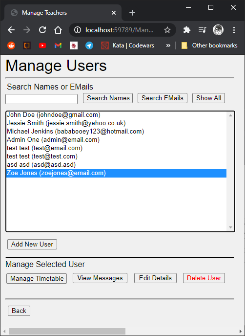

The Teacher Timetable is part of a wider system build for IMAT3903 Team Development Project. It is made in C# ASP.NET and is part of a single Visual Studio solution containing the team's projects. 
The Timetable system is designed for two types of user; the teacher and the admin. Teachers can view their timetables and change the rooms they teach in depending on room availability and if the room is assigned to their subject. They can also message admins for support in case they need free periods changed. Teachers can change their own passwords.
Admins can manage users and their details, edit timetables, delete users, add/edit/delete rooms, contact teachers and reply to support messages and change if user accounts are admins or not. Logins are done with password hashing and information is stored on an Azure database using stored procedures to avoid SQL injection attacks.
The system has unit tests set up to ensure that the code works as expected and user inputs should not cause issues.